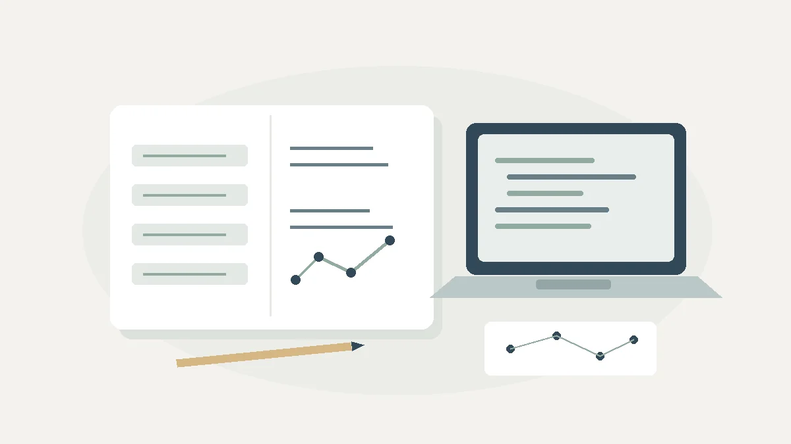

정보 교과 수행평가 보고서 서론 쓰기: 영역별 대본 4종과 점검표
실제 수행과 계획을 구분하며, 교과 개념과 본론의 근거를 연결하는 서론 작성 연습
목차
- 대본 사용법
- 정보 사회와 정보 윤리
- 자료와 정보
- 문제 해결과 알고리즘
- 프로그래밍·AI 학습
- 서론과 면접 점검
- 제출 전 체크리스트
핵심 요약
- 배경·목적·방법·이론·범위를 하나의 질문으로 연결합니다
- 계획과 완료한 활동을 구분하고 본론 근거를 확인합니다
- 전문 용어보다 조건과 한계를 설명하는 것이 중요합니다

정보 교과 수행평가 보고서의 서론은 코딩 결과를 화려하게 소개하는 문단이 아니라, 무엇을 왜 탐구했고 어떤 자료와 방법으로 어디까지 확인했는지 안내하는 지도입니다. 이 글은 정보 교과에서 활용할 수 있는 네 가지 영역을 중심으로 배경·필요성 → 목적·방법 → 이론·교과 연계 → 범위·구성을 연결하는 대본을 제공합니다.
교과서의 단원명·순서와 인공지능 관련 내용의 포함 여부는 교육과정과 출판사에 따라 다릅니다. 아래 네 영역은 활용을 위한 분류이며, 자신의 교과서 목차와 교사의 수행평가 안내에 맞춰 조정하세요. 정보 보고서가 모든 대학에서 동일한 정성평가 자료로 활용되는 것은 아니며, 대학별 전형은 공식 자료로 별도 확인해야 합니다.
1. 대본 사용법: 완료한 탐구와 계획을 구분하기
대본의 [대괄호]는 학생이 직접 채울 자리입니다. 제출용 완성 문장이 아니라 작성 연습을 위한 틀이므로, 실제 사용한 자료·도구·범위로 바꾸세요. 분석을 아직 하지 않았다면 “분석했다”가 아니라 “분석할 계획이다”라고 적습니다. 수업에서 느끼지 않은 호기심이나 실제로 접하지 않은 사건을 자신의 경험처럼 만들지 않습니다.
- 배경: 수업 개념과 구체적인 질문을 연결합니다.
- 목적·방법: 무엇을 비교할지, 왜 그 방법인지 밝힙니다.
- 이론·교과 연계: 실제 이수한 개념과 추가로 학습한 개념을 구분합니다.
- 범위·구성: 자료의 규모·기간·조건과 장별 내용을 안내합니다.
서론 초안은 탐구 전에 작성해도 됩니다. 다만 분석 후 질문이나 방법이 바뀌었다면 최종 서론을 본론·결론에 맞춰 수정하세요. 반드시 마지막에만 써야 한다거나, 방법론 이름을 적는 것만으로 표절·대필 의심이 사라진다는 주장은 적절하지 않습니다.
2. 정보 사회와 정보 윤리: 잡음·개인정보·편향 탐구
주제 예시: 가상 자료에 잡음을 추가했을 때 통계값의 정확도가 달라지는 정도와 차등 프라이버시의 개인정보 보호 원리 탐구.
① 배경·필요성 대본
정보 수업의 [개인정보 보호·정보 윤리 관련 단원]에서 데이터 활용과 개인의 권리가 충돌할 수 있음을 배웠다. 이에 [집계 통계 공개 사례 또는 수업 자료]를 참고하여, 자료의 활용도를 유지하면서 개인에 관한 정보 노출을 줄이는 방법에는 어떤 조건이 필요한지 질문을 정했다.
② 목적·방법 대본
본 탐구는 [직접 만든 가상 자료]의 [평균·합계 등 집계값]에 서로 다른 크기의 잡음을 추가하고, 원래 집계값과의 오차를 비교하는 것을 목적으로 한다. 파이썬으로 [반복 횟수]번 모의실험하여 오차의 분포를 기록하고, 차등 프라이버시가 요구하는 보호 조건과 단순한 잡음 추가 실험의 차이를 검토한다.
③ 이론·교과 연계 대본
정보 교과의 개인정보 보호 개념을 출발점으로 삼고, [실제로 학습한 확률·통계 개념]을 사용해 잡음과 오차를 해석한다. 차등 프라이버시의 ε, δ와 민감도는 추가 학습 범위로 구분하며, 선택한 메커니즘에서 보호 수준과 정확도 사이에 어떤 상충 관계가 있는지 살펴본다.
④ 범위·구성 대본
이 보고서는 [자료 수·변수·잡음 조건]에 한정한다. 제2장에서는 자료 생성과 모의실험 조건 및 오차를 제시하고, 제3장에서는 보호 조건을 충족하는지 확인하지 못한 부분과 실제 적용의 한계를 정리한다. 알고리즘 편향은 별도의 평가 문제로 구분하여 후속 탐구 방향을 제안한다.
기술 점검: 정규분포 잡음을 넣었다고 차등 프라이버시가 성립하는 것은 아닙니다. 이웃 데이터의 정의, 집계 함수의 민감도, ε·δ에 맞춘 잡음 설정, 반복 공개에 따른 합성 등을 고려해야 합니다. 개인 식별 정보 유출의 “원천 차단”을 약속하지 않으며, 개인정보 보호가 알고리즘 공정성까지 자동으로 보장하지 않습니다. 처음에는 실제 보건·금융 개인정보 대신 가상 자료를 권장합니다.
3. 자료와 정보: TF-IDF·텍스트 분석 서론
주제 예시: 이용이 허용된 환경 정책 관련 문서에서 주요 단어를 추출하고 TF-IDF로 문서별 특징을 비교하기.
① 배경·필요성 대본
[자료 수집·표현 관련 단원]을 학습하며 문장 형태의 자료를 분석 가능한 구조로 바꾸는 과정에 관심을 가졌다. [환경 정책 등 선정한 주제] 관련 문서에서 자주 나타나는 단어와 특정 문서에서 두드러지는 단어가 같은지 확인하기 위해 탐구 질문을 설정했다.
② 목적·방법 대본
본 탐구는 [출처·기간·문서 수]의 텍스트를 수집하고, 전처리 후 단어 빈도와 TF-IDF 값을 비교하는 것을 목적으로 한다. [공개 API·허용된 다운로드·직접 만든 문서 등 실제 수집 경로]를 이용하며, 문서 중복 제거와 단어 분리 기준을 공개한다. 결과는 상위 단어의 표와 막대그래프로 제시한다.
③ 이론·교과 연계 대본
정보 교과에서 다룬 [리스트·딕셔너리 등 실제 학습 내용]로 문서와 단어별 빈도를 저장한다. TF는 [선택한 정규화 방식]으로 계산하고, IDF는 ln(N/df)를 사용한다. 여기서 N은 전체 문서 수, df는 해당 단어가 등장한 문서 수이며, TF-IDF는 두 값의 곱이다. 교과 범위를 넘는 로그 계산은 추가 학습 내용으로 밝힌다.
④ 범위·구성 대본
분석 범위는 [언론사·기관·기간·언어]로 제한한다. 제2장에서는 자료 수집·전처리와 TF-IDF 결과를 비교하고, 제3장에서는 표본 선택, 형태소 처리, 동의어와 다의어가 해석에 미치는 한계를 정리한다. 이 결과를 전체 사회 여론으로 일반화하지 않는다.
기술·권리 점검: IDF는 단순히 문서 빈도의 역수만 곱하는 것이 아니며, 로그·평활화 방식에 따라 값이 달라집니다. 라이브러리를 쓰면 실제 공식을 확인하세요. 웹 크롤링은 사이트 이용약관·접근 규칙·저작권·개인정보를 확인하고 과도한 요청이나 접근 제한 우회를 피해야 합니다. 워드클라우드는 보조 시각화이며, 단어가 크다고 중요도나 사회적 의미가 증명되지는 않습니다. 네트워크 그래프를 추가할 때는 단어 간 연결 기준을 별도로 밝혀야 합니다.
4. 문제 해결과 알고리즘: 최단 경로 비교 서론
주제 예시: 비음수 간선 그래프에서 다익스트라 구현 방식과 A*의 탐색량 비교하기.
① 배경·필요성 대본
[탐색·알고리즘 관련 단원]에서 같은 문제도 처리 방법에 따라 필요한 연산이 달라질 수 있음을 배웠다. 이를 경로 탐색으로 확장하여, 같은 그래프와 출발·도착점에서 구현 방식에 따라 탐색량과 실행 시간이 어떻게 달라지는지 질문을 정했다.
② 목적·방법 대본
본 탐구는 비음수 가중치 그래프에서 순차 탐색 방식과 우선순위 큐 방식의 다익스트라 알고리즘을 비교한다. 추가로 [격자 지도 등 조건]에서는 [선택한 휴리스틱]을 사용하는 A*를 적용한다. 같은 입력으로 최단 거리의 일치 여부를 먼저 확인한 뒤, 방문·확장한 노드 수와 반복 실행 시간을 측정한다.
③ 이론·교과 연계 대본
정보 교과의 탐색과 효율성 개념에서 출발하여 그래프의 정점 수 V와 간선 수 E를 구분한다. 일반적인 배열 기반 다익스트라는 O(V²), 인접 리스트와 이진 힙을 이용한 구현은 통상 O((V+E)log V)로 설명한다. 실제 측정값과 빅오 표기법이 나타내는 증가 양상은 구분하여 해석한다.
④ 범위·구성 대본
자료는 [정점 수·간선 수·생성 규칙·난수 시드]의 정적 그래프로 제한한다. 제2장에서는 구현과 정확성 점검, 조건별 탐색량·시간을 제시하고, 제3장에서는 자료 구조와 실행 환경의 영향, 실제 교통망과의 차이를 논의한다.
기술 점검: 다익스트라를 모든 경우 O(N log N)이라고 쓰면 정점·간선 수와 구현 차이가 가려집니다. A*의 최단 경로 보장 조건도 중요합니다. 휴리스틱의 과대추정 여부와 일관성, 구현의 노드 재탐색 방식 등을 확인하세요. 실시간 교통은 시간에 따라 비용이 달라지는 별도 문제이며, 작은 정적 그래프 실험을 실제 내비게이션 성능 검증으로 바꾸어 말하지 않습니다.
5. 프로그래밍·AI 학습: 경사하강법 서론
주제 예시: 단일 변수 선형 회귀에서 평균제곱오차의 기울기와 학습률에 따른 손실 변화 비교하기.
① 배경·필요성 대본
[변수·반복문·함수 관련 단원]을 학습하며, 예측값의 오차를 줄이는 반복 과정이 어떻게 코드로 표현되는지 궁금했다. 이에 작은 선형 회귀 모형을 대상으로 가중치 변화와 손실 감소의 관계를 직접 확인하고자 했다.
② 목적·방법 대본
본 탐구는 예측식 ŷ=wx+b와 평균제곱오차를 사용하여 w와 b의 기울기를 계산하고, 순수 파이썬 반복문으로 경사하강법을 구현하는 것을 목적으로 한다. [가상 자료 또는 이용 가능한 공개 자료]를 사용하여 학습률별 손실 변화와 검증 자료의 예측 오차를 비교한다.
③ 이론·교과 연계 대본
정보 교과의 변수·반복문·함수를 구현의 기반으로 삼고, 수학의 미분과 변화율 개념을 확장해 가중치 갱신을 설명한다. 편미분은 일반적인 고교 미적분의 기본 이수 내용이라고 단정하지 않고 추가 학습으로 구분한다. 다른 변수를 고정한 채 하나의 변수가 손실에 미치는 영향을 계산한다.
④ 범위·구성 대본
탐구 범위는 [자료 수·초기값·학습률·반복 횟수]의 단일 변수 회귀로 한정한다. 제2장에서는 기울기의 유도와 코드, 학습률별 손실 변화를 제시하고, 제3장에서는 수렴하지 않은 조건과 자료의 한계를 분석한다. L1/L2 규제는 이번에 실행한 내용과 구분하여 후속 계획으로 제안한다.
수식 확인: L=(1/n)Σ(wxᵢ+b−yᵢ)²로 정하면 ∂L/∂w=(2/n)Σ(wxᵢ+b−yᵢ)xᵢ, ∂L/∂b=(2/n)Σ(wxᵢ+b−yᵢ)입니다. 갱신은 w←w−η·∂L/∂w, b←b−η·∂L/∂b입니다. 손실에 ½을 넣는 정의를 쓰면 계수도 달라지므로 본문과 코드의 정의를 맞추세요.
기술 점검: 회귀에서는 “정확도” 대신 MSE나 MAE 등 선택한 오차 지표와 단위를 밝히는 편이 명확합니다. 학습률이 커서 손실이 진동·발산하는 문제와 과적합은 다릅니다. 외부 라이브러리는 사용할 수 있으며, 사용 여부 자체보다 직접 작성한 부분과 도구에 맡긴 부분을 구분해 설명하는 것이 중요합니다.
6. 최종 서론과 면접 설명을 함께 점검하기
서론을 다듬을 때는 문장마다 본론의 근거 위치를 붙여 보세요. “비교했다”는 문장에는 결과 표, “유도했다”는 문장에는 계산 과정, “구현했다”는 문장에는 코드와 자신이 맡은 범위가 있어야 합니다. 근거가 없으면 문장을 계획형으로 바꾸거나 삭제합니다.
- 개념 확인 질문: “서론에서 사용한 방법의 정의와 선택 이유는 무엇인가요?” 용어 이름보다 입력·처리·출력을 설명합니다.
- 한계 확인 질문: “조건을 바꾸면 결론이 유지되나요?” 비교한 조건과 미확인 조건을 나누고 재검증 방법을 제시합니다.
- 전이 질문: “실제로 사용한다면 어떤 위험과 권리 문제를 고려해야 하나요?” 개인정보·저작권·표본 대표성·책임을 해당 탐구와 연결합니다.
이 세 단계는 연습용 분류이며 특정 대학의 공식 면접 체계가 아닙니다. 학생부 세특은 교사가 작성하고, 학생은 실제 학습 과정과 자료 출처, 수정 이력을 정리합니다. 대본을 자신의 활동에 맞추는 과정이 핵심이며, 템플릿이나 전문 용어가 평가 결과를 보장하지 않습니다.
7. 제출 직전 체크리스트
- 교과서 단원과 수행평가 기준을 실제로 확인했는가?
- 배경·목적·방법·이론·범위가 같은 질문을 향하는가?
- [대괄호]를 실제 자료와 조건으로 바꾸었는가?
- 실행 전 계획과 완료한 실험을 구분했는가?
- 수식·자료 수·변수·코드·결과 표가 서로 일치하는가?
- 차등 프라이버시, 시간 복잡도, 편미분의 적용 조건을 설명할 수 있는가?
- 출처·이용 조건·외부 코드와 자신의 기여를 표시했는가?
- 결론의 한계가 서론에도 반영되어 있는가?
관련 글
AI·소프트웨어 계열 교과 연계 심화 탐구 주제 5선과 3개년 로드맵
교과 원리에서 시그모이드·규제·시계열·AI 윤리·번역 탐구로 이어지는 주제 5선과 학년별 브릿지, 과정 기록, 면접 준비를 안내합니다.
탐구보고서 처음 쓰는 법: 질문·자료·분석·결론을 연결하는 실전 예시
가상 공지 네 개를 비교하며 관찰과 해석, 결론의 한계를 구분하고 보고서 한 편으로 묶습니다.
서류기반면접 예상 질문 준비법: 답변마다 근거를 붙이는 연습
자신의 활동에서 근거 위치를 찾고 실제 수행·공동 역할·한계를 구분해 질문과 꼬리질문에 답합니다.
이 글은 일반 교육 정보이며 특정 대학 합격·학생부 평가·면접 결과를 보장하지 않습니다. 학교와 대학의 공식 안내를 함께 확인해 주세요.